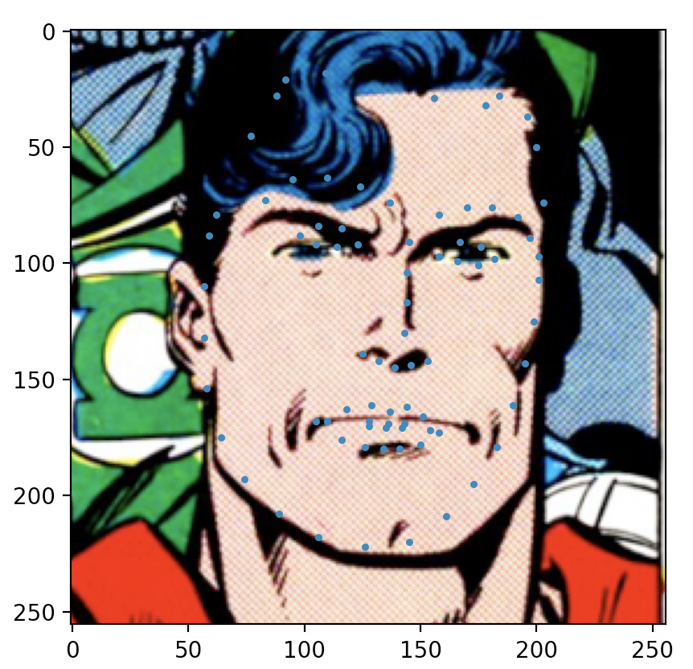
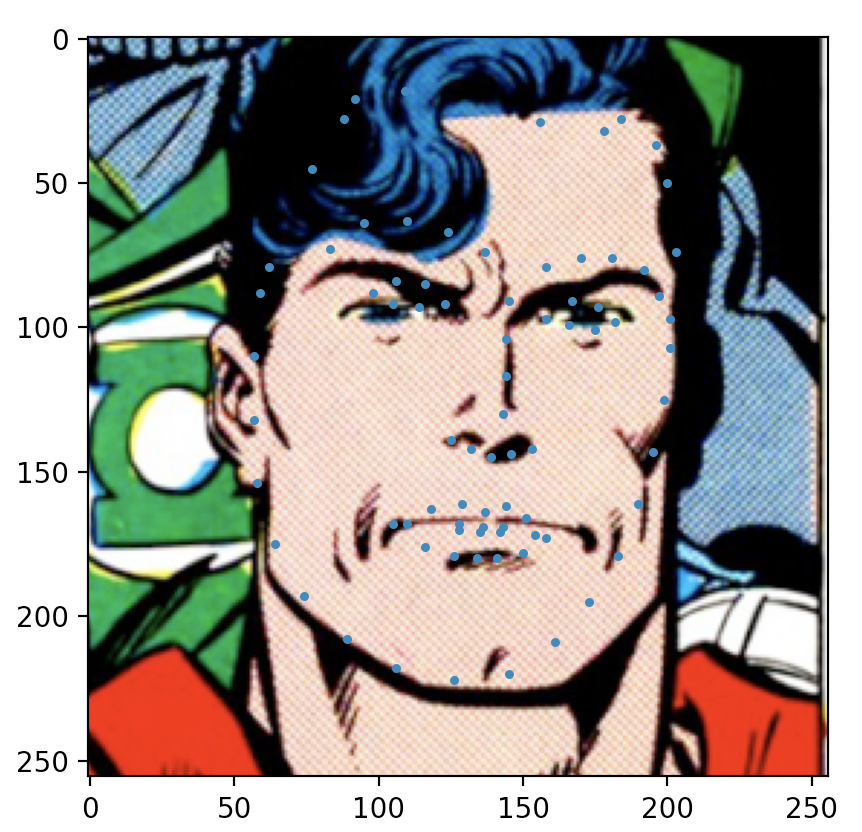
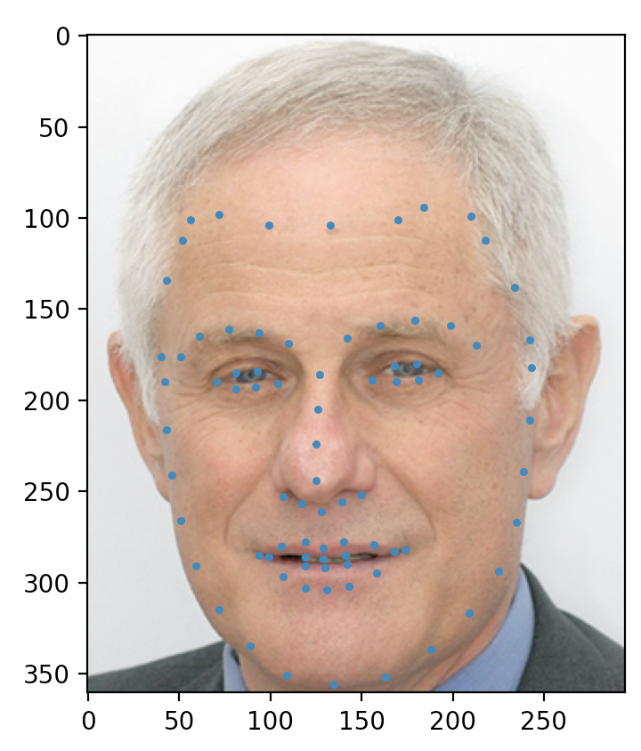
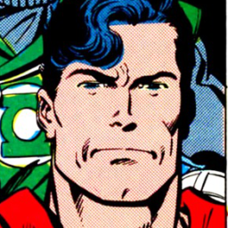
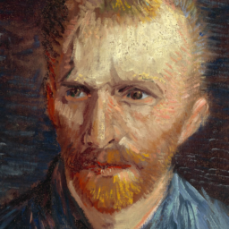
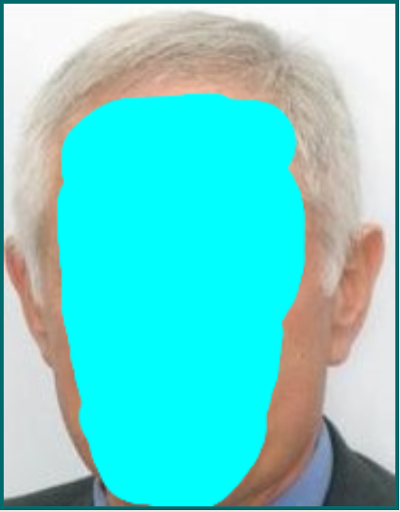

Artistic Stylization of Faces
Cooper Link, Devarsi Rawal, Kevin Li, Matt Carroll, Saloni ShahFall 2020 CS 4476 Computer Vision: Class Project
Georgia Tech
Abstract
The goal of our project is to create an artistically styled interpretation of a portrait that maps important features of an input face onto an input painting without sacrificing the geometric proportions and color palate of the painting. For this update, we decided to split our project into pieces that would then be combined into a pipeline for our final update. We implemented the Viola-Jones algorithm, facial landmark detection, image quilting for texture transfer, and mixed cloning using poisson blending this stage independently. We found that each individual portion of our greater project performed the required function that it needed to perform, and our qualitative results show the test cases that we fed into the algorithms.
Teaser figure


 

Approach
Viola-Jones Face Recognition
A critical component in pre-processing our input images is to determine what type of warping should take place. To do this, our project uses the OpenCV implementation of Cascade Classifiers [1] to quickly identify regions with front facing human faces in them. If a face is identified in both the input painting and the input user portrait, our algorithm will warp the user portrait to support the styling of the painting. Otherwise, texture mapping will be applied.
The Viola-Jones approach to quick object detection was an extremely innovative approach when it was defined in 2001. The authors used a learning algorithm called Adaboost to determine sets of simple features that can be applied to an image to determine if it contains a face. Incoming images are split into sub-windows and passed through a trained classification pipeline called a simple feature cascade. At each stage in the pipeline a simple feature is applied to the sub-window. If the window passes a certain threshold, the region is classified as possibly containing a face and it proceeds. If it does not pass a certain stage in the pipeline, it is discarded. This approach makes the algorithm very computationally cheap to apply because most windows are discarded very early.
Image Quilting for Texture Transfer
For the case that no face was detected, we opted to use a texture transfer algorithm to give the input face the texture of the portrait. What came to mind was the texture transfer algorithm created by Efros and Freeman in their 2001 paper, Image quilting for texture synthesis and transfer [1]. In this paper, textures were transferred from object to object by comparing which texture from the source closest resembled the texture from the destination, and once the best match was found, the textures were stitched together by finding the seam of least error between the overlaps of the two regions and combining the two textures based on that seam. Because there was no code associated with the paper, we implemented it ourselves. In terms of obstacles, there were not that many. There were not that many obstacles that we faced for this portion. A key obstacle that may be faced down the road is how the algorithm can be tweaked to improve time-complexity, and this is because the algorithm takes upwards of an hour for mid sized portrait (~500x500 pixels).
Facial Landmark Detection
The feature detection used for our face tracking is a shape detector based on dlib. This approach employs ensemble regression trees (ERTs) to determine shapes based on the detected features. The accuracy of the detection is able to be improved by the regressors as well and it does so extremely quickly allowing it to run in real-time. The regression tree works by taking an input of all the expected locations of features corresponding with a given feature. These locations are then passed through cascading regressions and each time it becomes more certain that the feature seen corresponds to a certain trained feature. They are able to determine which features they think line up in each stage by finding the mean location of the features and then warping the detected shape onto the expected frame in order to line up the features. For each regression step, these divisions are made based on a system like a piecewise function based on pixel value difference [14]. For our case, we will be running it on static images to detect 81 facial landmarks allowing us to map the face from an image onto a piece of artwork. We need to use this 81 landmark version instead of the default dlib version because we need to detect the forehead which dlib’s existing facial landmark detector does not do.
Seamless Cloning Using Poisson Blending
To artistically stylize the source face, we decided to use a blending algorithm to merge the face with the portrait. The algorithm used in this implementation is seamless cloning through Poisson blending. As described by Perez et al. in their paper Poisson Image Editing, Poisson blending is an image editing technique in which one image may be inserted into another image without introducing any visually unappealing seams [2]. The authors present different use cases of Poisson blending in their paper; however, we are solely focused on normal and mixed seamless cloning. In normal seamless cloning, the gradient field used for the guidance field is taken entirely from the source image. Mixed seamless cloning, on the other hand, takes the gradient field with the stronger variation from either the source or target image to use in the guidance field. We will experiment with both techniques to create a stylized face.
Experiments and Results
Viola-Jones Face Recognition
In order to use the Viola-Jones algorithm in our project, our group opted to use the cascade classifier implemented in OpenCV. This allows our team to use pre-trained cascade pipelines for face detection and avoid the need for large training and testing data sets. One concern that our group had with using the pre-trained cascade networks was that networks trained to capture pictures of real people would not be generalizable to paintings of people. Initial testing has shown that existing cascade networks can be used to reliably find human faces in paintings as well as photos.
Image Quilting for Texture Transfer
Our experimental set up for the texture transfer was simple. We used a variety of portraits that did not contain faces as our base and an image of Zvi as our person’s headshot photo. We evaluated this portion of the project qualitatively as the objective of texture transfer using image quilting is to transfer textures as smoothly to the human eye as possible. Because there is no learning involved, qualitative analysis would be the most appropriate way of examination.

Here are two examples of Zvi being integrated using the texture of Van Gogh’s Starry Night and Van Gogh’s Wheatfield with Cypresses. A naive approach to texture mapping would be to reduce the transparency of the person’s face and place it in front of the portrait. This would essentially overlay the image of the person’s face on top of the portrait. This is the incorrect way to do this, and examples of this image overlay are shown below.


The parameters for our algorithm that can be changed are the alpha value which determine how much the person’s face’s shape and edges are factored into the final texture map. The alpha value we used was 0.8, which was suggested by the Efros paper. Another parameter that was used was the amount of overlap that two texture blocks would have before stitching them together. We utilized 1/6 of the texture block size as this was also suggested by the paper.
A trend that we saw was that, when it comes to portraits, because they do not have a relatively uniform texture, the texture that is used to recreate the person’s face is often the same. This result was expected because the variation among a person’s face is often minute, meaning that similar corresponding textures from the portrait would be chosen as the transfer texture for each “block” of the face. This is a benefit, as the person’s face can be more easily ingrained into the background of the photo, because the face is less varied.
Facial Landmark Detection
For detecting facial landmarks we used a pre trained shape detector that found 81 facial landmarks. We tested the model in both human faces and artworks. We determined the quality of the features qualitatively because the model was pretrained. The detector worked well on human faces but failed on most artworks. It worked better on more realistic pieces and was especially poor on abstract images, by artists like Picasso. This makes a lot of sense because the shape detector is trained on human faces so when abstract paintings break those norms, with eyes too low, or shifter perspectives, the shape is too far off to be correctly fit to. There are options we intend to explore that use CNNs to tackle this problem for artworks, but we have not had a chance to do so yet. The results of the shape detector run on Zvi Galil and The Superman Comic can be seen below.


Seamless Cloning Using Poisson Blending
The experimental setup for testing seamless cloning required three parts: the source image (human face), the target image (portrait), and a mask that encapsulates the desired part of the source image to blend with the target image. As a continuation from before, we used an image of Zvi Galil’s head as the source image. The target image was Vincent van Gogh’s Self Portrait (1887).


To blend the images, we attempted two techniques in seamless cloning using Poisson blending: normal and mixed.
Qualitative Results
Viola-Jones Face Recognition
Viola
Image Quilting for Texture Transfer


Facial Landmark Detection
Seamless Cloning Using Poisson Blending
Conclusion and Future Work
A future goal would be to increase the speed at which the texture transfer takes. The time it took for the entire algorithm to run to completion was around an hour with both images being under 500x500 pixels. The amount of time it takes for it to run might turn off users, so we will need to look into ways to speed up our algorithm or pivot to neural networks that can run at much faster speeds [2].
References
[1] https://en.wikipedia.org/wiki/Viola%E2%80%93Jones_object_detection_framework
[2] http://www.cs.harvard.edu/~sjg/apr/
[3] https://github.com/codeniko/shape_predictor_81_face_landmarks
[4] https://github.com/papulke/face-of-art
[5] https://www.csie.ntu.edu.tw/~cyy/courses/vfx/18spring/lectures/handouts/lec05_morphing.pdf
[6] https://people.engr.tamu.edu/schaefer/research/mls.pdf
[7] http://cs.brown.edu/courses/cs195-g/asgn/proj2/resources/PoissonImageEditing.pdf
[8] https://faculty.idc.ac.il/arik/site/foa/artistic-faces-dataset.asp
[9] https://ibug.doc.ic.ac.uk/resources/facial-point-annotations/
[10] https://www.kaggle.com/ikarus777/best-artworks-of-all-time
[11] https://github.com/alyssaq/face_morpher/blob/dlib/facemorpher/warper.py
[12] https://github.com/Jarvis73/Moving-Least-Squares
[13] https://github.com/willemmanuel/poisson-image-editing/blob/master/poisson.py
[14] http://www.csc.kth.se/~vahidk/papers/KazemiCVPR14.pdf